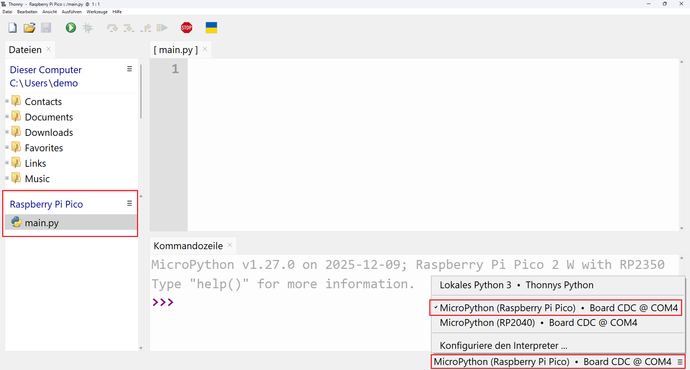
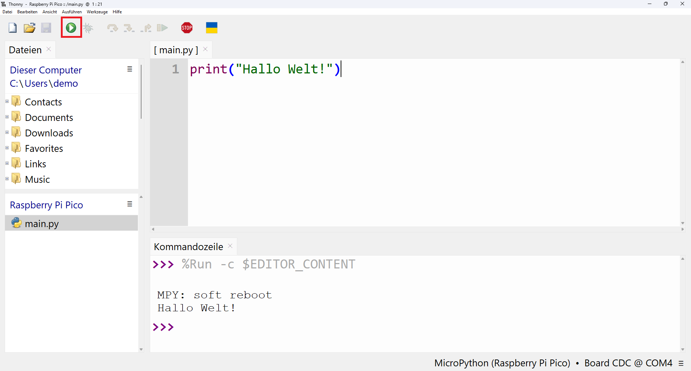

Python Entwicklungsumgebung Thonny
Zum Schreiben des Codes für den Raspberry Pi Pico brauchst du eine integrierte Entwicklungsumgebung (IDE). Für den Einstieg empfehlen wir die Python-IDE Thonny.
Installation
Folgende Anleitung zeigt dir, wie du Thonny installierst.
thonny.org [externer Link]
{kind=link}
Drücke dafür die ⊞-Taste und gib "Thonny" in die Suchleiste ein.
Konfiguration
In Thonny musst du einige Einstellungen vornehmen, damit du den Raspberry Pi Pico programmieren kannst. Öffne Thonny und führe die folgenden Schritte aus:
{kind=link}

Auf dem Raspberry Pi Pico sollte eine Datei mit dem Namen main.py vorhanden sein. Öffne diese mit einem Doppelklick.
Falls die Datei main.py nicht vorhanden ist, rechtsklicke auf den Bereich unterhalb der Überschrift "Raspberry Pi Pico" und wähle die Option "Neue Datei".
Nenne die Datei main.py und bestätige mit "Ok". Die Datei taucht nicht sofort in der Datei-Übersicht auf, sondern erst nachdem sie einmal gespeichert wurde.
Dein Erstes Programm
Nachdem du Thonny erfolgreich installiert und eingerichtet hast, bist du bereit für dein erstes Programm.
Gib den folgenden Code in die erste Zeile der Datei main.py auf dem Raspberry Pi Pico ein und speichere die Änderung mit Strg + S.
print("Hallo Welt!")
{kind=link}
